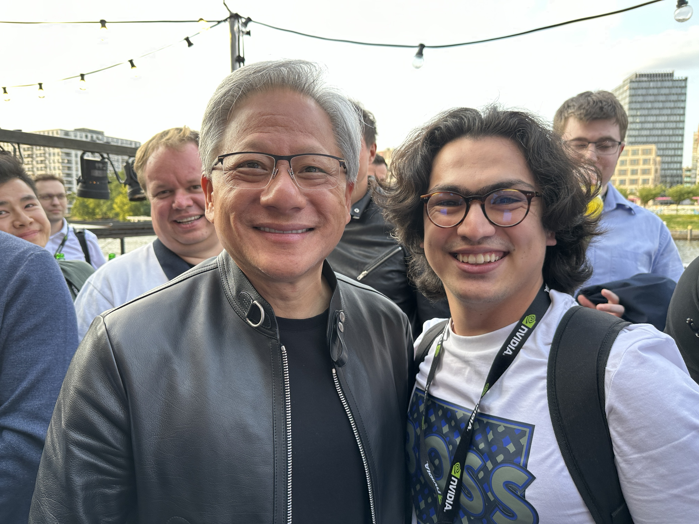

Listening to a fireside chat with Jensen Huang, the dynamic Founder and CEO of NVIDIA, alongside three pioneering startup founders— Dr. Jaroslaw “Jarek” Kutylowski of DeepL SE, Michael Putz of blackshark.ai, and Eric Steinberger of Magic—was a unique opportunity to delve into the collective wisdom of industry trailblazers. The insightful conversation mirrored a CEO self-help group, shedding light on the peaks and valleys of the entrepreneurial journey. In this post, I will share my key takeaways from this enlightening exchange.
Tech’s Evolving Landscape and the Decade Ahead
Jensen Huang’s conviction in AI’s potential to bridge existing technological gaps was a recurring theme in our discussions. He pinpointed that while sectors like heavy industries lag in technological advancements, AI could become a game-changer, particularly for the unsung heroes of climate modeling, who could utilize a foundational model emulating multi-physics to revolutionize their work.
Jensen’s infectious enthusiasm for a ‘software-defined world’ over the next decade reflected his perspective on the early days at NVIDIA. He reminisced about recognizing the CPU’s ‘miraculous’ potential, leading to NVIDIA’s revolutionary addition of GPUs to the tech arena.
NVIDIA’s Concentrated Focus
NVIDIA, under Jensen’s leadership, has honed its focus on three strategic areas: accelerated computing, AI as a stack, and AI factories. According to Jensen, long-term forecasts should be rooted in first principles, declared early on in a company’s trajectory.
Jensen’s analogy of ‘taping out your software’ served as a reminder of the significant investments post ‘Software 2.0’ companies make in procuring GPUs to supercharge their computational capabilities. He reminscented how back in the days, most of the raised budget for NVIDIA would go to taping chips and chip fabrications.
Startups: Against All Odds
Jensen’s account of his journey building NVIDIA was enlightening. The company had to navigate its way through a free graphics card market from Intel and the limitations imposed by Moore’s Law. Yet, they found a niche small enough that they could dominate with their resources against big players like Intel.
During the discussion, the other startup founders also shared their perspectives when Jensen asked why they chose to compete against well-established alternatives. Their response can be summarized as follows:
Microsoft Flight Simulator uses blackshark.ai because it fits their needs much better. They also update the world map more frequently, and with sufficient GPUs, they can do it in real-time.
Magic is up against the giants of OpenAI and GitHub Copilot, aiming to create the best AGI to empower software engineers. Magic’s goal is to generate relevant code without the need for fine-tuning or large memory requirements. Nat Friedman, former CEO of GitHub, who was responsible for Copilot during his time, invested in Magic, which speaks volumes. As Jensen noted, startups by definition lack enough engineers, so Magic can help them in that aspect.
DeepL was also up against Google Translate, but they have significantly improved their translation capabilities.
Controversial question to Jensen
Amidst the flood of questions and requests after the event, I took the opportunity to ask Jensen a question I have been curious, it was about regulations around AI and rising concerns of some people regarding the nationalization of NVIDIA. In response, Jensen briefly stated:
NVIDIA will not be nationalized; that’s not possible. If it were to happen, many nations would complain …
Summary
In conclusion, every CEO’s journey is a challenging endeavor, a road trip to a destination often shrouded in fog. Yet, the defining characteristic of these leaders, much like NVIDIA itself, is resilience. This event served as a powerful reminder of the importance of belief, endurance, and the relentless pursuit of one’s dreams.